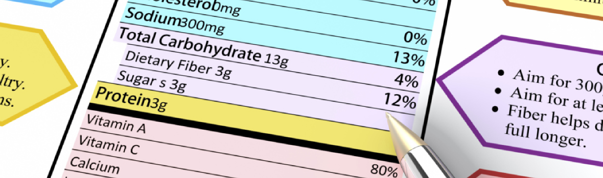
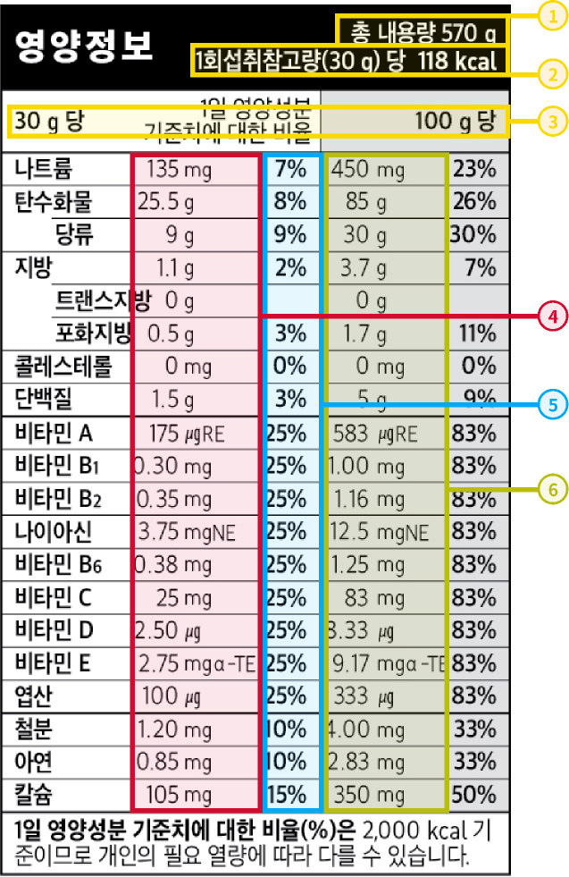

Cereal & Nutrition
Cereal & Nutrition
영양정보 들여다보기

건강한 식단을 원할 때, 정확한 식품에 대한 정보를 확인하는 것부터 시작해야 겠지요?
다행히도, 이러한 영양 정보를 찾는 일은 그리 어렵지 않습니다.
켈로그의 모든 제품은 제품별 영양 성분에 대한 정보를 표기하고 있으며, 여러분은 쉽고 간단하게 원하는 영양 정보를 확인하실 수 있습니다.
- “영양표시”란? 가공식품에 들어있는 영양성분에 관한 정보를 표시하는 것으로, 소비자가 건강한 식사에 필요한 식품을 확인하고 잘 선택할 수 있도록 돕기 위한 것입니다.
- “1일 영양성분 기준치”란? 일반인이 하루에 섭취해야 할 영양성분의 양을 정해 놓은 것입니다. (일반인 : 4세 이상 어린이 및 성인)
- “1일 영양성분 기준치에 대한 비율(%)”이란? 영양성분의 평균적인 1일 섭취 기준량의 몇 %인가를 나타낸 것입니다.
- “1회 섭취참고량”이란? “1회 섭취참고량”은 만 3세 이상 소비계층이 통상적으로 소비하는 식품별 1회 섭취량과 시장조사 결과 등을 바탕으로 설정한 값을 말합니다. 1회 섭취참고량은 식약처의 식품의 유형에 따라 다르게 설정되어 있습니다. 1회섭취참고량을 이해하는 것은 매우 중요합니다. 1회섭취참고량을 섭취하였을 때 각 영양소별 섭취량을 기준으로 나에게 맞는 적절한 분량을 조절할 수도 있습니다.
- 시리얼류 : 30g
- 곡류가공품 : 100g
- 체중조절용조제식품 : 40g
제품의 측면

FAQ
- 열량과 트랜스지방의 섭취 기준은 없나요?fnq 내용 보기
- 1일 영양성분 기준치에 대한 비율(%)은 식약처가 제시한 ‘1일 영양섭취 기준치’를 기준으로 하고 있으며, 열량과 트랜스 지방의 기준치는 설정되어 있지 않습니다.
- 우유와 함께 먹었을 경우 영양성분의 정보는 없나요?fnq 내용 보기
- 식약처에서는 제품 자체에 포함된 영양 정보만을 제공하도록 안내하고 있습니다. 추가적인 내용이 궁금하신 경우 소비자상담실(080-023-6411)로 연락주세요.
- 열량과 트랜스지방의 섭취 기준영양소 필요량(%)은 어린이와 어른 모두에게 동일하게 적용되나요?fnq 내용 보기
- 어린이나, 임산부, 운동량, 활동량이 더 많은 사람 등 상황에 따라 영양소의 필요량은 다를 수 있습니다. 일반적인 기준을 의미하며, 참고 정보로 활용하시면 됩니다.